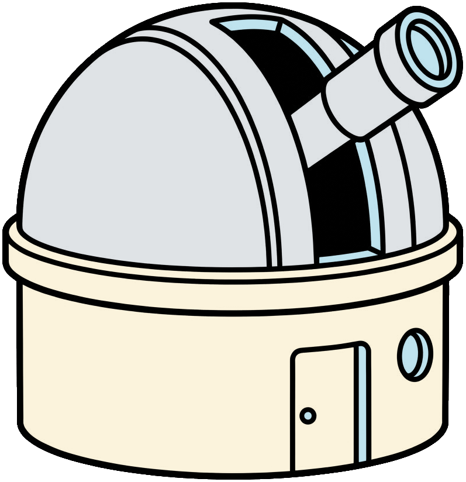
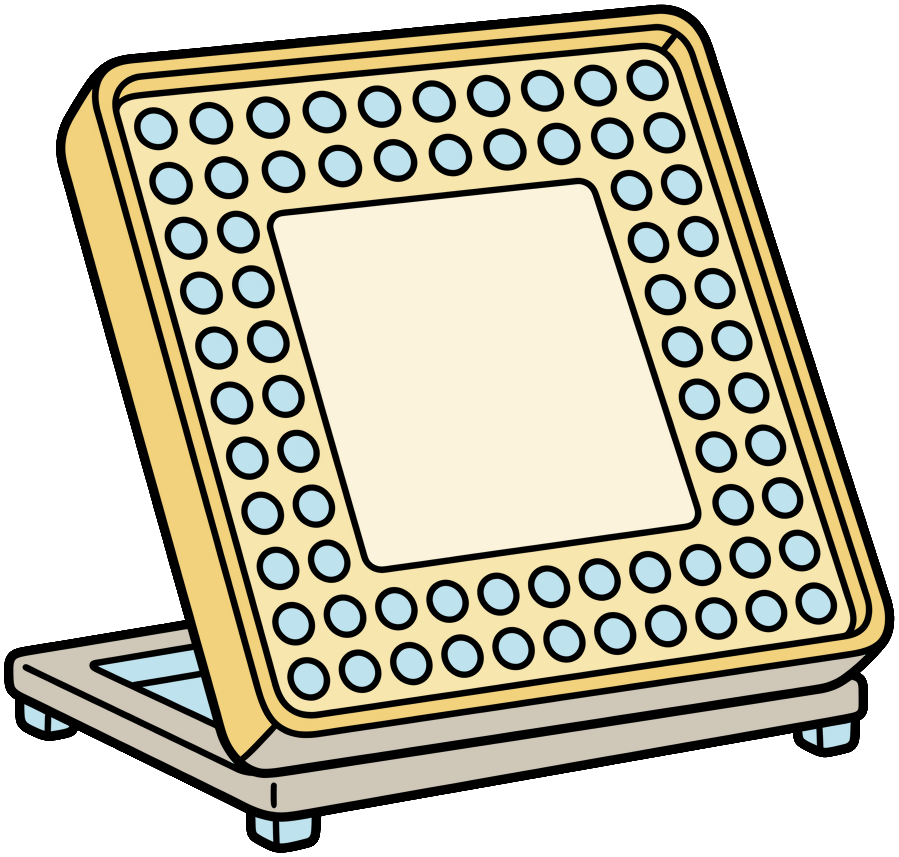
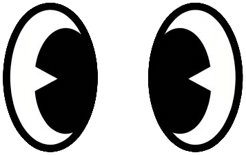
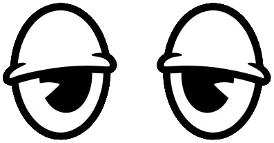
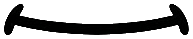
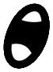
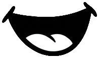
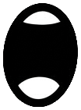
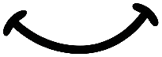

The Mirror
That Still Answers
An animated story told with real NASA data
Turn your sound on · about 6 minutes

Tranquility Base, July 20, 1969. NASA photo AS11-40-5948.








Character illustrations and code made with AI tools. Photos and data: NASA.